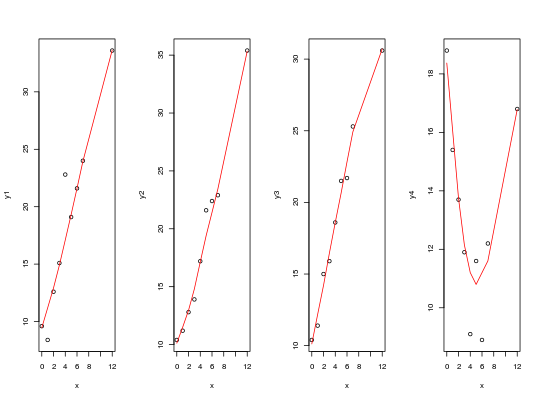

Dados simulados para exercício de ajuste de modelos de regressão linear simples e polinomial. São simulados, para uma mesma covariável (x), quatro diferentes variáveis de interesse (y).
Um data.frame de 9 linhas e 5 colunas, em que
xy1y2y3y4DEMÉTRIO; ZOCCHI (2011), Tabela 4.5 pág. 137.
data(DemetrioTb4.5)#> Warning: data set ‘DemetrioTb4.5’ not foundstr(DemetrioTb4.5)#> 'data.frame': 9 obs. of 5 variables: #> $ x : num 0 1 2 3 4 5 6 7 12 #> $ y1: num 9.6 8.4 12.6 15.1 22.8 19.1 21.6 24 33.6 #> $ y2: num 10.4 11.2 12.8 13.9 17.2 21.6 22.4 22.9 35.4 #> $ y3: num 10.4 11.4 15 15.9 18.6 21.5 21.7 25.3 30.6 #> $ y4: num 18.8 15.4 13.7 11.9 9.1 11.6 8.9 12.2 16.8# Relação da covariável com cada uma das variáveis resposta par(mfrow = c(1, ncol(DemetrioTb4.5) - 1)) for (i in 2:ncol(DemetrioTb4.5)) { plot(DemetrioTb4.5[, c(1, i)]) lines(lowess(DemetrioTb4.5[, c(1, i)]), col = 2) }# Gráfico de dispersão por pares, apresenta também a relação entre as # variáveis resposta pairs(~ x + y1 + y2 + y3 + y4 , data = DemetrioTb4.5, main = "Dispersão duas a duas")